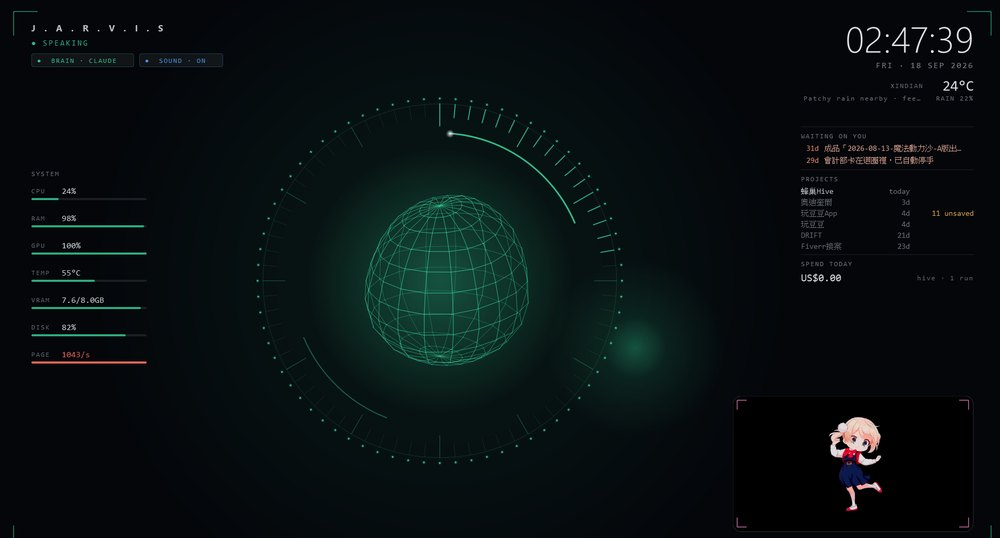
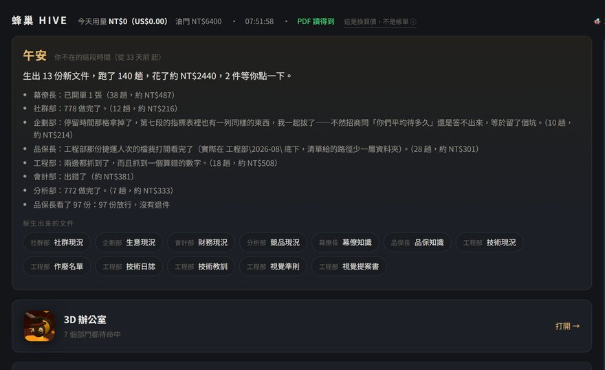
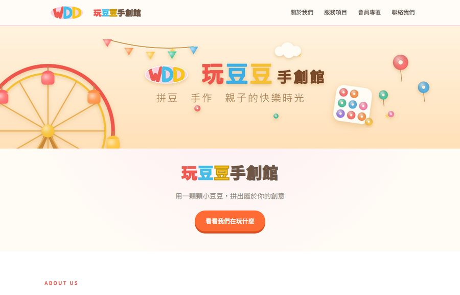
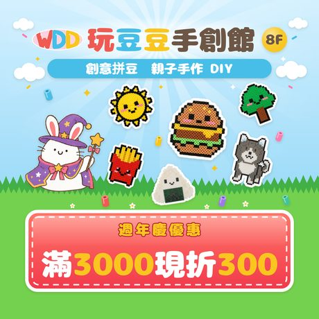
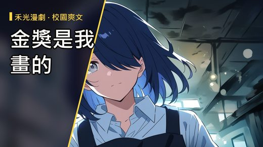
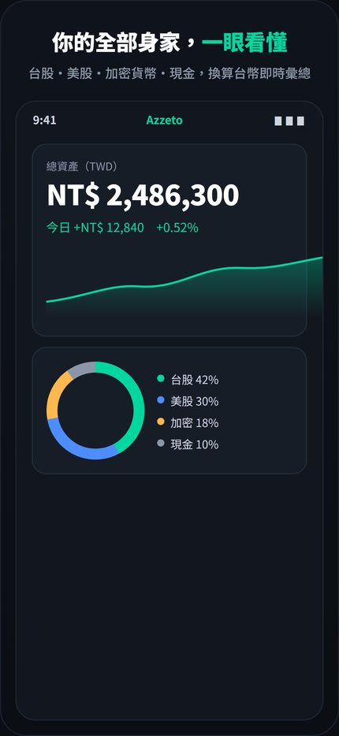
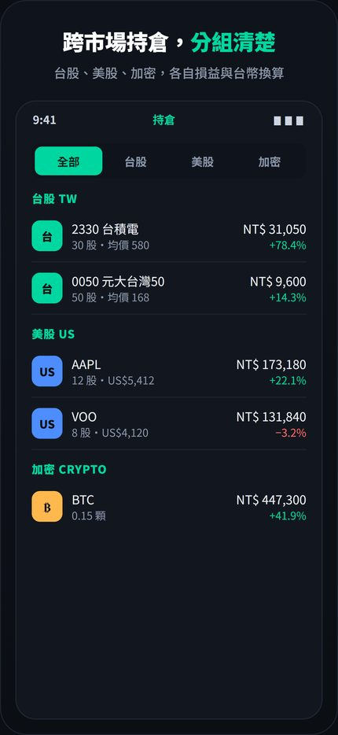
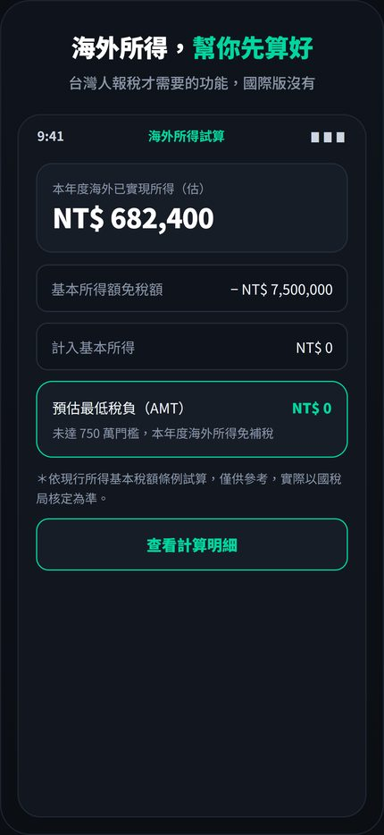

楊承翰
aa0970322920@gmail.com │ 0970-322-920
線上版（連結可直接點、有作品截圖）：chris0517-sb.github.io/portfolio
下面這些是我這一年陸續做的。我負責決定要做什麼、怎麼設計、做出來對不對；程式、圖和文字由 AI 產出。有想看的，我可以當場打開。
App Store
那套系統跑完的
到上傳都自動
數位的部分我做
JARVIS — 電腦裡的 AI 助理
Python │ 58 支程式、約 2.1 萬行、30 支測試檔 │ 2026 年 6 月開始做，到現在還在加東西
我用講的跟它說話，它用聲音回答。桌面上有一層像科幻電影的介面，顯示時間、天氣、它現在在想什麼，還有它講話的字幕。這是我做最久、也改最多次的東西。

它正在講話時的畫面。左邊是這台機器的狀態，中間是它的狀態球，右邊是時間、天氣、等我決定的事、每個專案多久沒動、今天花了多少錢。
它會做的事
- 用講的就能使喚：語音辨識在我自己電腦上跑，聲音不用傳出去。它講到一半我可以打斷。
- 自己會找事做：按時間收信、看行事曆、每週清一次沒用的檔案，不用我開口。
- 記得以前的事：講過的內容會留著，下次接得上，不是每次從零開始。
- 手機也叫得動：用 Discord 私訊下指令，人不在電腦前也能使喚，它還能傳圖回來。
- 看得到螢幕：需要的時候它能看我畫面上是什麼，再決定怎麼回答。
- 知道我在不在：電腦閒置太久它就不開口，不會對著空椅子講話。
我特別花時間處理的三件事
- 不能讓它闖禍。會殺系統程式、刪掉整個資料夾、動到開機設定這類指令，我在程式裡直接擋掉。我誤殺過一次系統程式，後來就改成用程式擋，不是提醒自己小心。
- 不能整個停擺。接了好幾家 AI 服務互相備援，一家掛掉自動換下一家接手。
- 不能亂花錢。簡單的問題走便宜的模型，難的才升級，常用的答案存起來重複用。
我做的部分：決定它有哪些能力、哪些事不讓它做、每個功能做完要看到什麼才算好。那 30 支測試檔就是為了這件事——改完跑一輪，確認沒有把別的地方弄壞。
蜂巢 Hive — 一套讓 AI 分工做事的系統
Node.js ＋ SQLite ＋ Claude Code │ 2026 年 8 月建置並實際營運
跑在我家電腦上的一套系統。裡面有八個「部門」，會自己上班、自己交件、自己互相驗收。需要我決定的事，它在畫面上跳出幾顆按鈕，我點一下就好，不用打字回覆。手機和電腦各有一個介面，開機自動啟動。
八個部門：幕僚長、企劃、社群、設計、工程、品保、財務、分析。每個部門有自己的知識檔、固定的上班時間，以及「哪些事一定要問老闆」的界線。
- 自動執行 694 次工作、開出 778 張工單
- 產出 81 份 PDF（社群貼文企劃、檔期活動、日報）
- 主動來問我 331 次——需要我決定的事，它不會自己做
- 設有花費上限，錢到上限會自己停：實際停過 67 次
我做的部分：分哪些部門、每個部門什麼時候醒來做事、什麼事必須問我、什麼事它自己決定，還有交出來的東西合不合格。

早上打開電腦看到的畫面：我不在的時候它做了什麼、花了多少錢、哪幾件要我決定。（右側的內部對話面板已裁掉）
玩豆豆手創館 — 我合夥的百貨櫃位
遠東百貨板橋中山店 8 樓 │ 兒童手作（拼豆、動力沙、彩繪、雪花泥）
店是合夥的，數位和行銷的部分我負責：
- 會員 App（櫃檯 iPad）：註冊、查點數、續約、作品寄放登記。已上架 App Store（隱藏上架，只給店裡的平板裝）。
- LINE 官方帳號＋電子會員卡：客人在櫃檯註冊，平板跳出一張專屬 QR，客人掃一下就同時加好友並綁定本人，全程不用打字。
- 官網：已上線。
- 拼豆原寸底稿工具：客人拿照片來，轉成拼豆圖，印出 1:1 原寸底稿墊在盤子底下照著做。33 色色盤是從店裡真實色卡一顆一顆取色的；每頁附一把 100mm 校正尺，印表機有縮放當場量得出來。店裡現在在用。
- 品牌素材：logo、名片、點數卡、海報、LINE 圖文選單。做成腳本，改個參數就能重出一版，不用每次重畫。
- 知名度拓展企劃書：九個章節，含目標、時程、KPI 與風險。
可現場打開：官網 chris0517-sb.github.io/wandoudou-web │ 會員 App App Store


官網、店內橫幅、加 LINE 好友海報、週年慶小卡。版面、文案、吉祥物設定和印刷檔都是我做的。
AI 內容產線 — 影片和圖，機器自己做
三個 YouTube 頻道（AI 知識／心理學觀念／場景英文） │ 共 21 支影片
整條線是自動的：選題 → 寫稿 → 配音 → 剪接 → 上字幕 → 上傳並排定發布時間。
AI 生出來的東西不能直接發，所以我把該擋的規則寫成程式：
- 每支片不能跟前一集長得一樣。主視覺、版面、段數、片長、開場、節奏、配樂這七項，至少要有三項不同——不過關就中止，不會做完才發現。
- 字幕檢查、開頭結尾檢查、上傳前檢查、發錯頻道防呆，任一關沒過就不上傳。
另外兩條線
- AI 動漫短劇：用我自己電腦的顯示卡跑圖，配上自動剪接，晚上自己做。
- AI 生圖投稿圖庫：本機跑 ComfyUI ＋ FLUX 生圖，自動挑圖、用文字辨識擋掉畫面上有亂碼字的圖。已有作品通過 Adobe Stock 審核。

AI 動漫短劇的封面。人物、背景、配音、剪接、字幕都是機器做的，我定故事方向和過不過關的標準。
其他做過的東西
- Azzeto 投資紀錄 App（iOS，公開上架中）：原生 Swift 開發，2026 年 7 月上架，到現在改版十次。主要做的是台灣在地化的部分：海外所得試算用財政部的算法、台股手續費、每一筆交易記下當天匯率。裡面有訂閱制金流（月／年／終身三種方案＋7 天試用），產品落地頁和隱私權政策網頁也是我做的。我沒有 Mac，建置、簽章到上架都用雲端機器完成。App Store 可直接搜尋 Azzeto
- 奧迪奎爾 Odyquill（iOS App，已上架）：把你走過的地方變成一張會慢慢展開的紙雕地圖。App Store
- DRIFT 選股工具：點兩下掃過 1,506 檔美股，自動產出一份 HTML 報告。
- 收入監控台：七頁的儀表板，把各條收入來源的狀況即時推到畫面上，還會用語音提醒我。



Azzeto 在 App Store 上的實際畫面（畫面裡的數字是展示用的範例資料）。
我做事的習慣
- 動手前會先問清楚。我習慣討論到能寫成規格才開工，不會做完一大堆再回頭改。
- 看到成品才說做好了。檔案、畫面、線上的回應；光是程式沒報錯，我不敢算數。
- 犯過的錯會寫下來。能用程式擋的就做成程式，不靠自己記得。
- 做不到會直接說。試過確定不可行就停，不會硬花時間和錢。
我可能幫得上忙的地方
這些在玩豆豆都做過
- 社群內容：一個月的貼文和檔期文案一次排好，照片後製、短影音剪好，拿到就能發。
- 店內素材：菜單、海報、點數卡、QR 立牌，做成改參數就重出一版，不用每次找設計。
- 讓客人回流：LINE 官方帳號＋電子會員卡，掃一下綁定，到期或生日自動提醒。
- 現場工具：會員查詢、寄物登記這類事，做成一台 iPad 就能跑的 App。
- 把重複的事自動化：每天固定要做的報表、發文、盤點交給機器，人只負責做決定。
誠實說明：以上專案的程式、圖片與文字，主要是我用 AI 工具產出的（Claude Code、ComfyUI、AI 生圖與語音服務等）。我負責的是決定要做什麼、怎麼設計、卡住時怎麼解，以及做出來的東西對不對、能不能交出去。我不是資訊科班出身，也不會說這些程式是我徒手寫的。